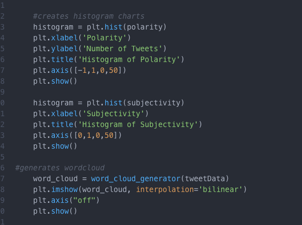
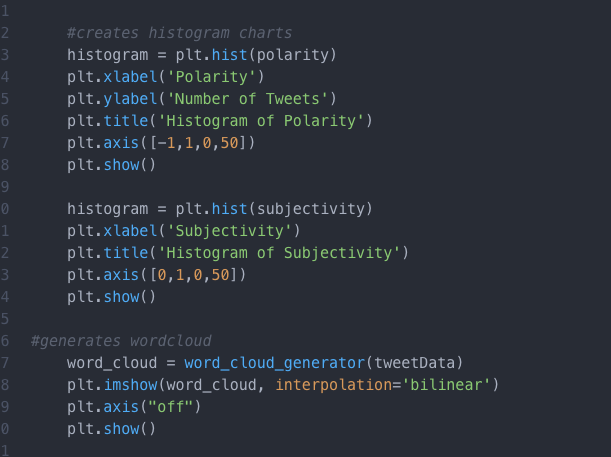

ABOUT THIS PROJECT
I analyzed data from Twitter and created polarity and subjectivity histograms from commonly used words that real people wrote in their tweets.



I analyzed data from Twitter and created polarity and subjectivity histograms from commonly used words that real people wrote in their tweets.
